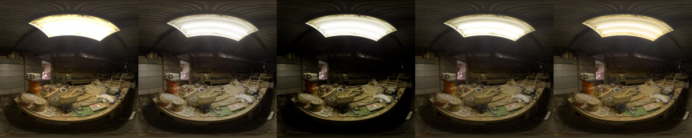
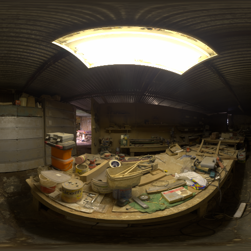
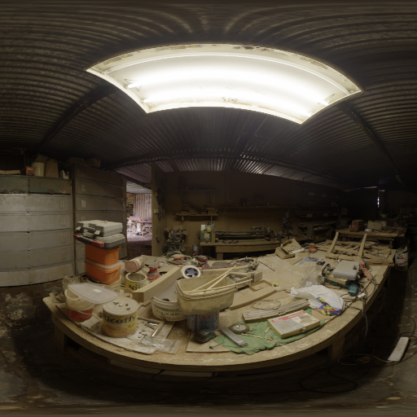

Tone map HDR images
{kind=link}
from tinycio import ColorImage
im = ColorImage.load('my/hdr_image.tif', 'SRGB_LIN')
im.tone_map('AGX_PUNCHY', target_color_space='SRGB_LIN').save('my/ldr_image.tif')
ColorImage handles any necessary color space conversions silently.
If you do this manually and step-by-step instead, take note of the inputs expected.
from tinycio import ColorSpace, ToneMapping, fsio
# Load HDR image from disk
im_hdr = fsio.load_image('my/hdr_image.exr')
cs_in = ColorSpace.Variant.SRGB_LIN
cs_tm = ColorSpace.Variant.ACESCG
cs_out = ColorSpace.Variant.SRGB
tm = ToneMapping.Variant.ACESCG
# This tone mapper expects scene-referred ACEScg data
im_ap1 = ColorSpace.convert(im_hdr, cs_in, cs_tm)
# Apply (fitted) ACES RRT+ODT
im_ldr = ToneMapping.apply(im_ap1, tone_mapper=tm)
# Take image to sRGB and apply the gamma curve
im_srgb = ColorSpace.convert(im_ldr, cs_tm, cs_out)
# Save final image as 24-bit sRGB PNG file
fsio.save_image(im_srgb, 'my/ldr_image.png')
Comparison
This HDR environment map was put through the different tone mapping options.
Clamp/saturate (no tone mapping)
{kind=link}
AgX
{kind=link}
AgX Punchy

{kind=link}
{kind=link}
{kind=link}